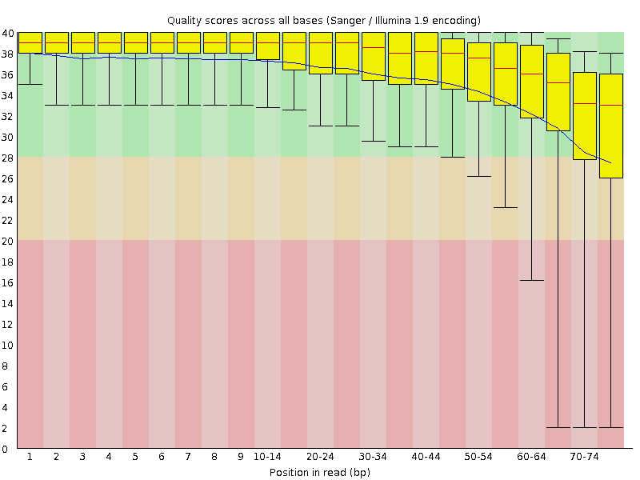
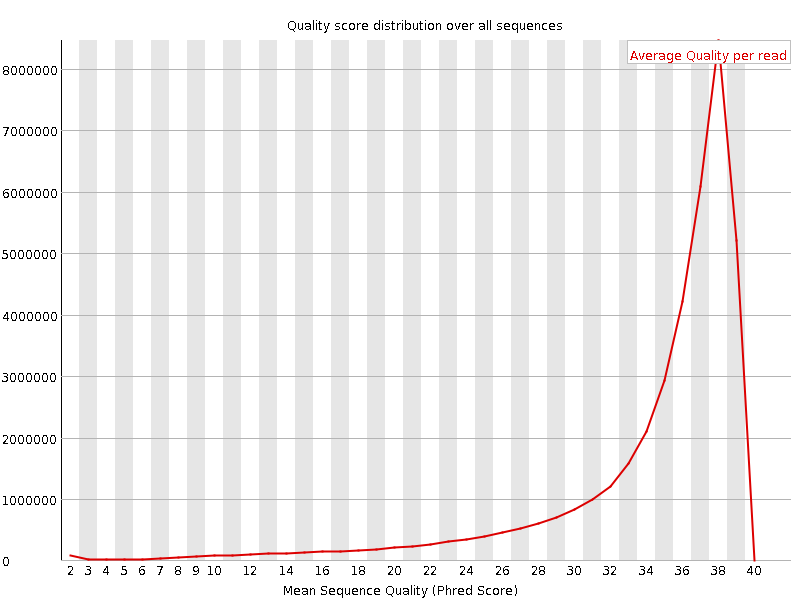
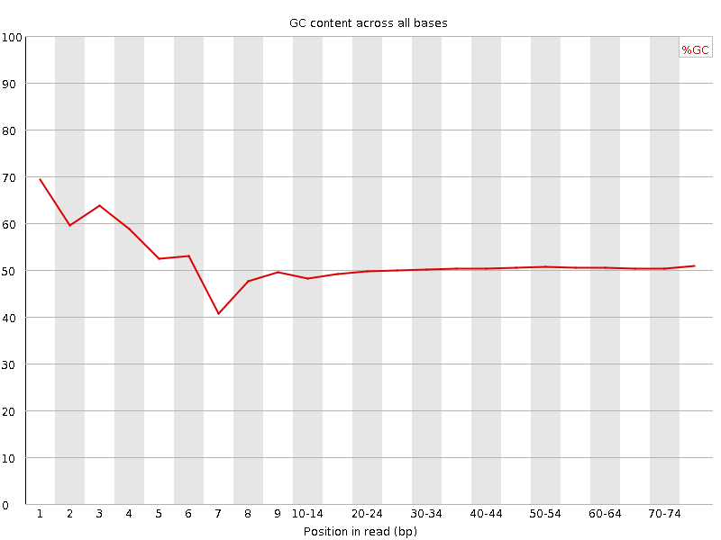
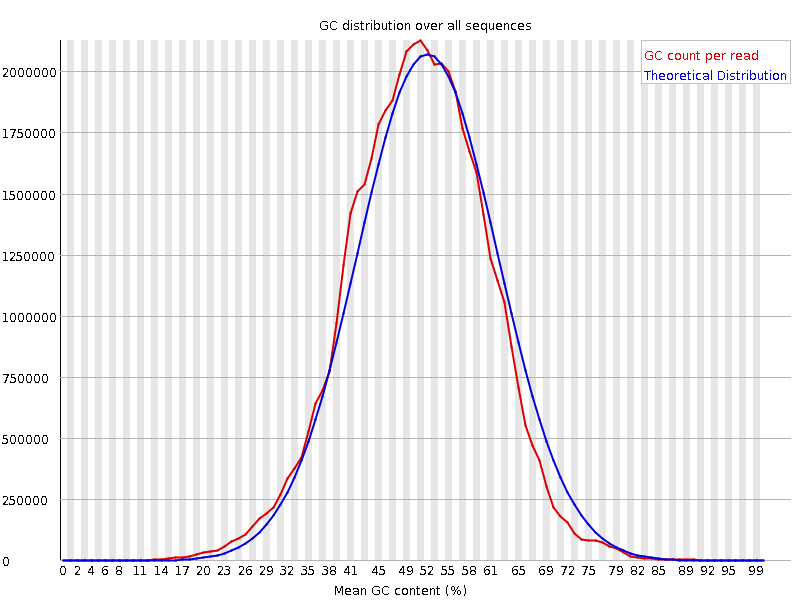
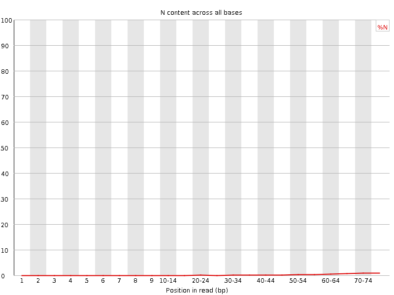
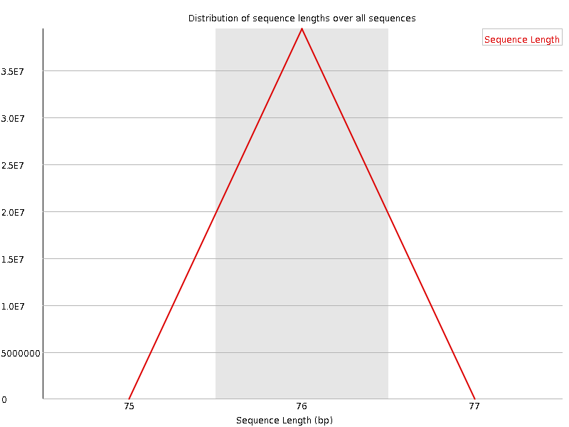
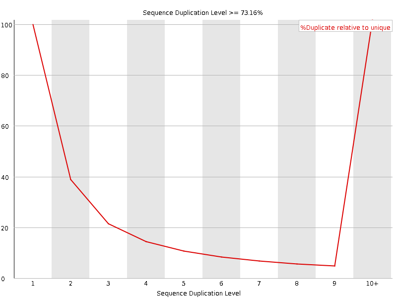
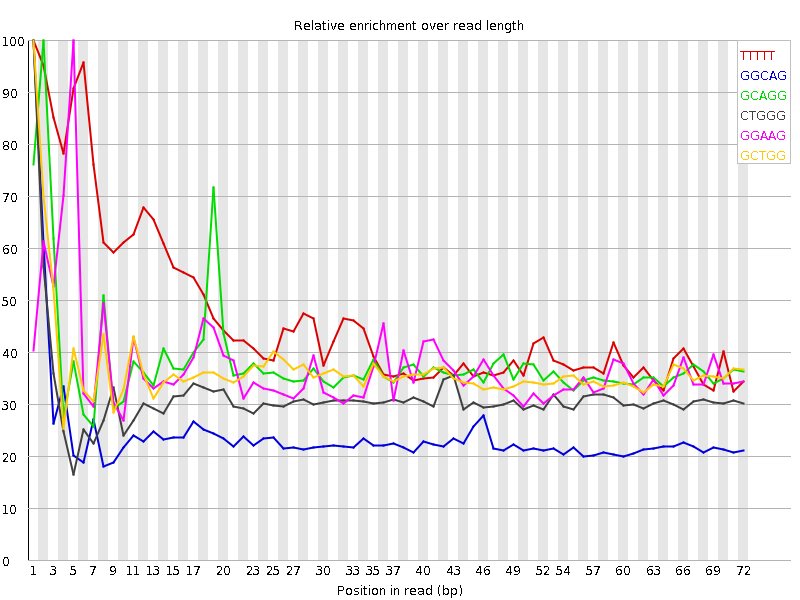

![[OK]](Icons/tick.png) Basic Statistics
Basic Statistics
| Measure | Value |
|---|---|
| Filename | SRR315334_1.fastq |
| File type | Conventional base calls |
| Encoding | Sanger / Illumina 1.9 |
| Total Sequences | 39455691 |
| Filtered Sequences | 0 |
| Sequence length | 76 |
| %GC | 50 |
Per base sequence quality

Per sequence quality scores

![[FAIL]](Icons/error.png) Per base sequence content
Per base sequence content

Per base GC content

Per sequence GC content

Per base N content

Sequence Length Distribution

Sequence Duplication Levels

Overrepresented sequences
No overrepresented sequences
![[WARN]](Icons/warning.png) Kmer Content
Kmer Content

| Sequence | Count | Obs/Exp Overall | Obs/Exp Max | Max Obs/Exp Position |
|---|---|---|---|---|
| TTTTT | 6895085 | 2.5070734 | 5.346872 | 1 |
| GGCAG | 6615435 | 2.1199746 | 8.796255 | 1 |
| GCAGG | 6540415 | 2.0959337 | 5.4885516 | 2 |
| CTGGG | 6487500 | 2.0145004 | 6.4045 | 1 |
| GGAAG | 6171695 | 1.977773 | 5.3038363 | 5 |
| GCTGG | 6249965 | 1.940741 | 5.265101 | 1 |
| GGGCA | 5667555 | 1.8162183 | 6.442339 | 1 |
| GGGGG | 6504050 | 1.7249563 | 9.142444 | 1 |
| TGGGG | 5578225 | 1.5757846 | 5.610143 | 1 |
| GGGGA | 5334900 | 1.5552828 | 8.283932 | 1 |
| GGGAG | 5260515 | 1.5335974 | 6.1560984 | 1 |
| GGGGC | 5054715 | 1.4736016 | 5.4499645 | 2 |
| GGGTG | 5034255 | 1.4221194 | 5.5661235 | 2 |
| GTGGG | 4917915 | 1.3892546 | 8.042714 | 1 |
| TGGGT | 4484910 | 1.3494637 | 5.029598 | 2 |
| GGGGT | 4766385 | 1.3464493 | 6.8417215 | 3 |
| CGGGG | 3780365 | 1.1020901 | 8.077227 | 1 |
| GCGGG | 2339820 | 0.6821279 | 5.2724047 | 1 |